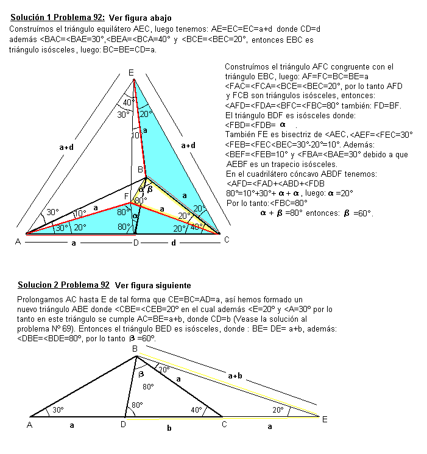
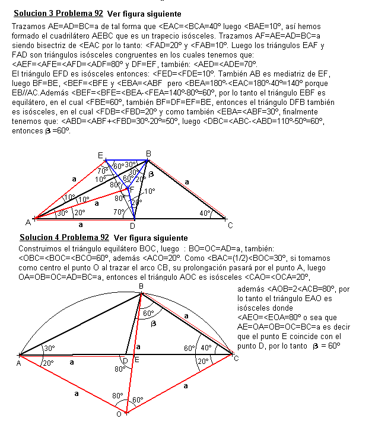

En un triángulo ABC se traza la ceviana BD (D en AC) de tal forma que AD=BC.
Si < A =30º y < C= 40º, hallar < DBC
Cuatro soluciones de Juan Carlos Salazar, Profesor de Geometría del Equipo
Olímpico de Venezuela.(Puerto Ordaz)

